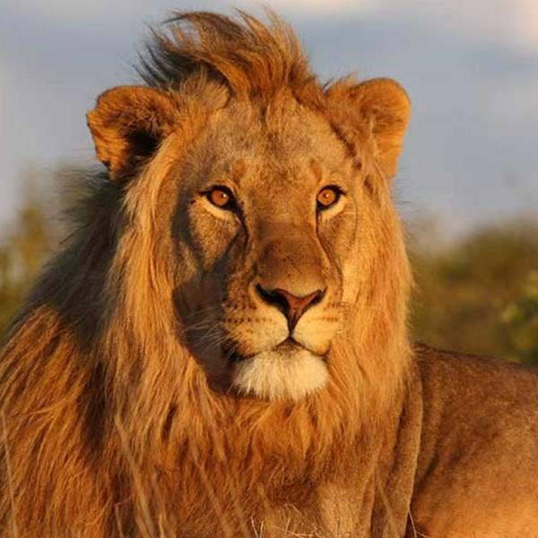

Leon:

El león (Panthera leo) es un mamífero carnívoro de la familia Felidae y es conocido por ser el "rey de la
selva". Los
leones suelen habitar en las sabanas africanas, formando grupos sociales llamados manadas. Los machos se
destacan por
sus majestuosas melenas, y ambos géneros participan en la caza. Son animales sociales y se comunican
mediante rugidos y
otros sonidos. Los leones son cazadores ágiles y formidables, siendo los principales depredadores de la
sabana.
Jirafa:
La jirafa (Giraffa camelopardalis) es el animal terrestre más alto y está reconocida por su distintivo
cuello largo y
manchas en su pelaje. Habita en las sabanas y zonas arboladas del África subsahariana. Su anatomía única
le permite
alcanzar las hojas más altas de los árboles para alimentarse. Las jirafas son animales pacíficos y
suelen vivir en
grupos pequeños. Además de su cuello largo, tienen patas largas y un patrón de manchas en su pelaje, lo
que las hace
fácilmente reconocibles.
Hiena:

León:
El león (Panthera leo) es un mamífero carnívoro de la familia Felidae y es conocido por ser el "rey de
la selva". Los
leones suelen habitar en las sabanas africanas, formando grupos sociales llamados manadas. Los machos se
destacan por
sus majestuosas melenas, y ambos géneros participan en la caza. Son animales sociales y se comunican
mediante rugidos y
otros sonidos. Los leones son cazadores ágiles y formidables, siendo los principales depredadores de la
sabana.
Jirafa:
La jirafa (Giraffa camelopardalis) es el animal terrestre más alto y está reconocida por su distintivo
cuello largo y
manchas en su pelaje. Habita en las sabanas y zonas arboladas del África subsahariana. Su anatomía única
le permite
alcanzar las hojas más altas de los árboles para alimentarse. Las jirafas son animales pacíficos y
suelen vivir en
grupos pequeños. Además de su cuello largo, tienen patas largas y un patrón de manchas en su pelaje, lo
que las hace
fácilmente reconocibles.
Hiena:
Las hienas son mamíferos carnívoros pertenecientes a la familia Hyaenidae. Existen diversas especies de
hienas, siendo
las más conocidas las hienas manchadas. Estos animales son conocidos por su risa estridente, que puede
sonar similar a
la risa humana, pero no indica necesariamente alegría. Las hienas son carroñeras y también cazadoras, y
suelen vivir en
grupos llamados clanes. Tienen una anatomía robusta y fuerte, con mandíbulas poderosas adaptadas para
triturar huesos.
Elefante:
Los elefantes son los mamíferos terrestres más grandes y pertenecen a la familia Elephantidae. Se
reconocen por sus
grandes orejas, trompas largas y colmillos (en el caso de los elefantes africanos y algunos asiáticos).
Son animales
sociales y muy inteligentes que viven en manadas lideradas por una hembra mayor. Los elefantes africanos
y asiáticos se
diferencian en aspectos como el tamaño de las orejas y la forma de los colmillos.
Rinoceronte:
Los rinocerontes son mamíferos herbívoros pertenecientes a la familia Rhinocerotidae. Se caracterizan por
tener uno o
varios cuernos en la parte superior de su nariz. Hay varias especies de rinocerontes, como el
rinoceronte blanco y el
negro. A pesar de su apariencia robusta, los rinocerontes pueden ser rápidos y ágiles. Son animales en
peligro de
extinción debido a la caza furtiva para obtener sus cuernos, que desafortunadamente tienen un alto valor
en algunos
mercados.
Tigre:

El tigre (Panthera tigris) es el felino más grande y es reconocido por su pelaje anaranjado con rayas
negras. Es nativo
de Asia y se encuentra en diversos hábitats, desde selvas hasta bosques templados. Los tigres son
depredadores
solitarios y muy hábiles en la caza. Tienen un sentido del oído y la vista agudo, así como garras y
colmillos poderosos.
Aunque hay varias subespecies de tigres, muchas de ellas enfrentan amenazas significativas de extinción
debido a la
pérdida de hábitat y la caza furtiva.